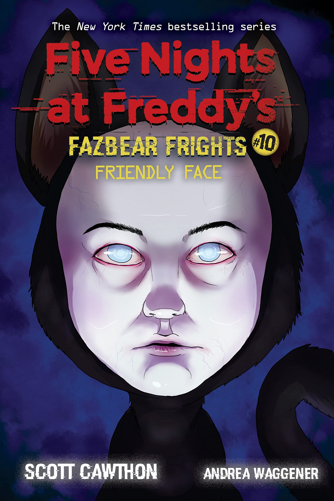

Em *Friendly Face*, Edward perde tragicamente seu gato, mas uma tecnologia experimental promete trazer de volta o que foi perdido. Contudo, o experimento cria algo muito mais perturbador. A história explora temas de perda, aceitação e limites éticos.
